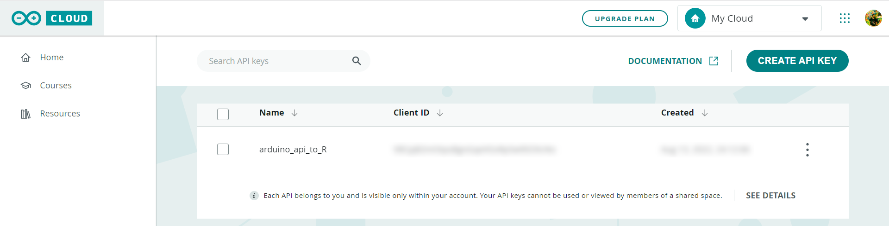
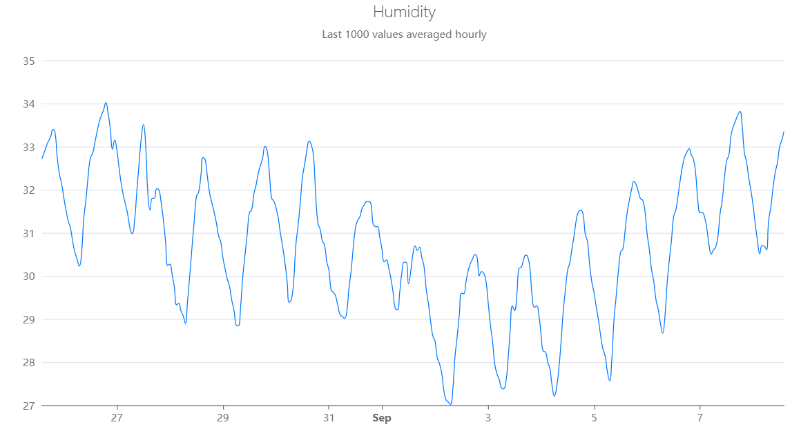

Rduinoiot provides an easy way to connect to Arduino Iot Cloud API with R. Functions allow to exploit API methods for many purposes, manage your Arduino devices and dashboards and access to the data produced by sensors and sketches. This is not an official library by Arduino.
Installation
You can install the development version of Rduinoiot from GitHub with:
# install.packages("devtools")
devtools::install_github("FlavioLeccese92/Rduinoiot")Authentication
In order to access the API methods you need to create an API key. This can be done by logging into your Arduino Cloud account and going to the page https://cloud.arduino.cc/home/api-keys/ and retrieve corresponding ARDUINO_API_CLIENT_ID and ARDUINO_API_CLIENT_SECRET.

library(Rduinoiot)
# Sys.setenv(ARDUINO_API_CLIENT_ID = 'INSERT CLIENT_ID HERE')
# Sys.setenv(ARDUINO_API_CLIENT_SECRET = 'INSERT CLIENT_SECRET HERE')
create_auth_token()
#> v Authorization succeededList things associated to the user
Things associated to the user account can be easily accessed using things_list(). This function will return detailed information, in particular things_id which are needed to access to properties.
create_auth_token()
#> v Authorization succeeded
tl = things_list()
#> v Method succeeded| created_at | href | id | name | properties_count | sketch_id | timezone | updated_at | user_id | device_fqbn | device_id | device_name | device_type |
|---|---|---|---|---|---|---|---|---|---|---|---|---|
| 2022-08-12 13:49:43 | /iot/v1/things/0b18eba2-2aba-4740-8bec-5043403ecdd9 | 0b18eba2-2aba-4740-8bec-5043403ecdd9 | Smart Garden | 8 | 7a8e48be-e77d-401c-8ef7-05bd6e7b4c27 | America/New_York | 2022-08-12 18:23:38 | fd39fa13-cbac-49ac-9316-cbdf452ba1c9 | NA | NA | NA | NA |
| 2022-08-12 18:24:07 | /iot/v1/things/60ef7770-90c0-4068-ac3d-8a2301c3ac3d | 60ef7770-90c0-4068-ac3d-8a2301c3ac3d | Home Security Alarm | 7 | 87cbfdec-b965-4a04-814a-232f65ac2f8e | America/New_York | 2022-08-12 18:42:09 | fd39fa13-cbac-49ac-9316-cbdf452ba1c9 | NA | NA | NA | NA |
| 2022-08-12 21:57:28 | /iot/v1/things/b6822400-2f35-4d93-b3e7-be919bdc5eba | b6822400-2f35-4d93-b3e7-be919bdc5eba | Personal Weather Station | 5 | 0ef1dc12-dd8f-477e-963a-f7734b5ff141 | America/New_York | 2022-08-12 21:59:46 | fd39fa13-cbac-49ac-9316-cbdf452ba1c9 | arduino:samd:mkrwifi1010 | fa7ee291-8dc8-4713-92c7-9027969e4aa1 | MFA | mkrwifi1010 |
| 2022-08-12 13:32:16 | /iot/v1/things/bc3b2763-a775-4fc8-95da-c03235d47f3a | bc3b2763-a775-4fc8-95da-c03235d47f3a | Thinking About You | 2 | 3a558c37-f087-47e9-8f01-339b40fc6dd9 | America/New_York | 2022-08-12 13:40:06 | fd39fa13-cbac-49ac-9316-cbdf452ba1c9 | NA | NA | NA | NA |
Real-time sensor data
Reading real-time humidity sensor of one of your devices can be done as follow:
thing_id = "b6822400-2f35-4d93-b3e7-be919bdc5eba"
property_id = "d1134fe1-6519-49f1-afd8-7fe9e891e778" # Humidity
data_ts = things_properties_timeseries(thing_id = thing_id,
property_id = property_id,
desc = FALSE, interval = 3600)
#> v Method succeeded| time | value |
|---|---|
| 2022-08-27 09:00:00 | 33.47527 |
| 2022-08-27 10:00:00 | 33.51266 |
| 2022-08-27 11:00:00 | 33.04984 |
| 2022-08-27 12:00:00 | 31.92248 |
| 2022-08-27 13:00:00 | 31.52561 |
| 2022-08-27 14:00:00 | 31.80211 |
| 2022-08-27 15:00:00 | 31.80377 |
| 2022-08-27 16:00:00 | 32.02121 |
| 2022-08-27 17:00:00 | 31.99696 |
| 2022-08-27 18:00:00 | 31.71654 |
Plotting the result
A catchy representation of humidity time series can be plotted, for instance, by using the library echarts4r by John Coene:
library(echarts4r)
library(dplyr)
library(lubridate)
data_ts = data_ts %>% mutate(time = with_tz(time, tzone = Sys.timezone()))
data_ts %>%
e_charts(time) %>%
e_line(value, name = "Value", color = "#007BFF", showSymbol = FALSE, smooth = TRUE,
connectNulls = TRUE, animation = FALSE, emphasis = NULL,
lineStyle = list(width = 1)) %>%
e_title(left = 'center', text = "Humidity",
subtext = "Last 1000 values averaged hourly",
textStyle = list(fontWeight = 'lighter')) %>%
e_grid(top = 70, right = 30, left = 50, bottom = 30) %>%
e_x_axis(show = TRUE, type = "time") %>%
e_y_axis(show = TRUE, scale = TRUE) %>%
e_legend(show = FALSE)